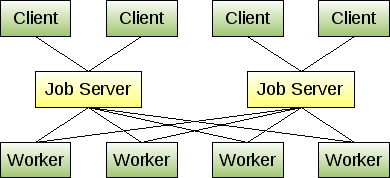

Lisp Project of the Day
cl-gearman
You can support this project by donating at:


cl-gearman
Yesterday, we talked about distributing jobs across a cluster using lfarm. lfarm is not well suited to environments where worker hosts can go down and return back later.
Gearman is the RPC server. Multiple workers can connect to this server and advertise which functions they are supporting. A client can call these functions and receive a result.
Here is the diagram showing how does it work in the common case:

A cool feature of Gearman is its language independence. Workers can be written in any language. This means that in your distributed system some functions can be written in Lisp, others in Python or even in Bash and some UNIX tools.
Now we'll see how to write a simple worker in Common Lisp and call it. But first, let's start Gearman server in the Docker container:
[art@poftheday:~]% docker run --rm -p 4730:4730 artefactual/gearmand:1.1.19.1-alpine
Unable to find image 'artefactual/gearmand:1.1.19.1-alpine' locally
1.1.19.1-alpine: Pulling from artefactual/gearmand
cbdbe7a5bc2a: Pull complete
33291983401c: Pull complete
b4a2ffd9f406: Pull complete
c5f0c79c81bd: Pull complete
c3b95f315fd4: Pull complete
e8fb3c47a5c3: Pull complete
Digest: sha256:585921f3509b86a9e78aac6c3512c894e0f0a8e0497d194483bafc5ebc275edc
Status: Downloaded newer image for artefactual/gearmand:1.1.19.1-alpine
INFO 2020-06-10 13:34:35.722249 [ main ] Initializing Gear on port 4730 with SSL: false
INFO 2020-06-10 13:34:35.000000 [ main ] Starting up with pid 1, verbose is set to INFO
INFO 2020-06-10 13:34:35.000000 [ main ] Listening on 0.0.0.0:4730 (9)
INFO 2020-06-10 13:34:35.000000 [ main ] Adding event for listening socket (9)Next, we need to start a simple worker which supports two functions. It can reverse any string and report about it's Lisp implementation:
POFTHEDAY> (cl-gearman:with-worker (worker "localhost:4730")
(cl-gearman:add-ability worker "get-implementation"
(lambda (arg job)
(declare (ignorable arg job))
(format nil "~A ~A"
(lisp-implementation-type)
(lisp-implementation-version))))
(cl-gearman:add-ability worker "reverse"
(lambda (arg job)
(declare (ignorable job))
(reverse arg)))
(loop (cl-gearman:work worker)))This is how we can call these functions from the console:
[art@poftheday:~]% echo 'Hello Lisp World!' | gearman -f reverse
!dlroW psiL olleH
[art@poftheday:~]% echo '' | gearman -f get-implementation
SBCL 2.0.2This way you can communicate with the Lisp from the outer world.
If we want to call these functions from other Lisp program, then we can do it like this:
OTHER-LISP> (cl-gearman:with-client (client "localhost:4730")
(format t "~A"
(cl-gearman:submit-job client "reverse"
:arg "Hello Lisp World!")))
!dlroW psiL olleH
OTHER-LISP> (cl-gearman:with-client (client "localhost:4730")
(format t "~A"
(cl-gearman:submit-job client "get-implementation")))
SBCL 2.0.2Gearman uses a very simple protocol. Every function accepts only one string as its argument. If you want to pass something complex, you'll need to use some sort of serialization.
For example, here is how I use cl-store and base64 to pass lisp data-structures between a worker and a client in Ultralisp.org:
That is it for today. Play with both lfarm and cl-gearman to decide which one is better suited for your task.
Brought to you by 40Ants under